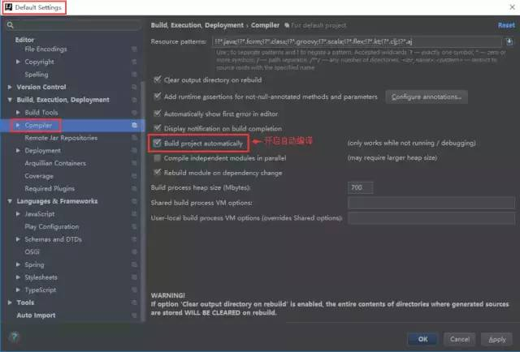

原文连接:https://www.cnblogs.com/54chensongxia/p/11461951.html
目录
工欲善其事，必先利其器。在Java开发中挑选一款好的Ide环境能大大提升我们的开发效率,IntelliJ IDEA正是一个不二选择。本指南中会介绍怎么对idea进行配置、使用idea进行debug和经常使用的快捷键，最后会推荐几个牛逼的idea插件，大大提升开发体验和效率。本文的内容基于Windows系统，关于Mac的内容请参考本篇博客
PS:本文部分内容来自网络，根据自己的习惯进行了编辑整理，方便自己查阅记忆。
1. 搭建idea的开发环境
在使用一个ide前，我们必须要对其进行配置以符合我们的开发需要。这个章节会介绍当我们安装好IntelliJ IDEA之后怎么对其进行必要的配置。
首先我们要去官网下载idea的安装包，记住一定要下载Ultimate收费版，因为收费版本比Community的免费版本多了很多功能，这些功能可以大大提升我们的开发效率。下载完成后需要自己安装激活。（关于怎么激活自己去百度下）
1.1 样式主题配置
第一次安装完IDEA之后，第一步往往需要设置一个合适自己的样式主题，这部分配置主要包括：
- 整体的主题配置；
- 菜单栏字体大小样式配置；
- 代码区字体大小样式配置；
- 输出控制台字体大小样式配置。
1. 主题和菜单栏配置
如上图，File>>Settings>>Appearance&Behavior>>Appearance，进入主题设置页面。选择我们喜欢的主题，这边我选择了我喜欢的Darcual主题，这个可以根据个人爱好自己选择。然后图中"override default fonts by"这栏，我一般会选择"微软雅黑"，字体大小自己选择。注意，这个配置只会影响主题和最上面菜单栏的显示。
2. 代码区字体大小样式配置
如上图，进入Color Scheme Font标签页进行代码编辑区的字体样式设置。
3. 输出控制台字体大小样式配置
1.2 设置编码字符集
1.3 配置JDK
1. 项目编译的JDK版本

如上图，上面的设置是配置编译出来的class文件的jdk版本是哪个，这边我们选择的是1.8版本。想要查看class文件的jdk版本，我们可以将class文件用编辑软件打开，以16进制的形式查看。
cafe babe 0000 0034 0026 0a00 0600 1809
0019 001a 0800 1b0a 001c 001d 0700 1e07
001f 0100 063c 696e 6974 3e01 0003 2829
5601 0004 436f 6465 0100 0f4c 696e 654e
756d 6265 7254 6162 6c65 0100 124c 6f63"cafe babe"是每个class文件固定的，后面的"0000 0034"就标明了class文件的jdk版本。其中0034代表的就是jdk1.8版本。下面是对照表：
| 版本号 | JDK版本 |
|---|---|
| 2E | jdk1.2 |
| 2F | jdk1.3 |
| 30 | jdk1.4 |
| 31 | jdk1.5 |
| 32 | jdk1.6 |
| 33 | jdk1.7 |
| 34 | jdk1.8 |
2. 配置Project的Jdk版本
项目的SDK默认会被项目中的每个module使用，当然我们也可以为每个module配置专有的SDK类型和版本。
3. 配置每个module依赖的JDK版本
每个module会默认使用project配置的jdk版本，当然我们也可以自己指定。
4. 检查平台的JDK版本（也就是你电脑上安装的JDK）
我们在给project创建jdk的时候其实用的就是这个jdk。
1.4 键盘习惯配置
如果你之前用惯的是Eclipse，可能用不惯IDEA的快捷键.没事，idea可以将快捷键设置为eclipse模式。你之前用的是windows电脑，现在转为mac了，idea也提供了相应的转换设置。
通过keyman标签还可以设置快捷键，但是个人不建议改变IDEA默认的快捷键设置。
1.5 配置资源分类
1.6 构建工具配置
常用的构建工具有Maven和Gradle。我们可以选其一。
1.7 配置Tomcat
1.8 一次只能打开一个文件（关闭Tab）
1.9 自动编译配置
具体步骤：顶部工具栏 File ->Other Settings -> Default Settings -> Auto Import
说明：开启自动编译之后，结合Ctrl+Shift+F9 会有热更新效果。

具体步骤： 敲击 Ctrl + Shift + Alt + / 然后双击Shift搜索进入Registry ，找到compiler.automake.allow.when.app.running ，然后勾选上。
2. 调试技巧
2.1 查看变量并修改值
每个IDE在调试代码时都提供了一个观察当前上下文变量值的窗口。其实除了查看之外，一些非final的基本类型，还可以直接在此处修改值。这样可以直接将值修改成我们期望的值直接调试我们想测试的情形。
2.2 表达式计算功能
这个功能可以在当前代码的上下文内，执行你临时写的代码来验证你的猜想，而不用再写代码去验证。或者可以临时改变某些变量，让代码朝着自己期望的方向执行。
例如，当前方法传入一个List，但这个方法里少一个你后面条件需要使用到的元素，此时你可以临时使用片断代码执行的功能，添加一个进去。
2.3 条件断点
为了调试代码，就需要在要观察变更的地方添加断点，然后小心翼翼的一步步执行。但是如果是在一个循环里，又或者该方法会被多线程同时调用到的时候，你小心的向下单步调试，发现没有你关心的内容，又从循环开始处跑下来，还是没你的内容，人就开始烦燥起来。
其实，在添加断点的时候，我们可以为断点增加一定的条件，这样，在指定的条件满足时，断点才会生效。IntelliJ IDEA内，在断点上右击，会弹出如下图的条件框，输入指定的条件即可。
2.4 后退执行
这里所说的后退执行，是有些时候我们在debug代码时，懒的每个方法都进入单步调试，就会出现你观察一个变量值的变化时，某个方法没跟进去，结果值就变了，不得不重来一次。依靠后退执行的功能，可以后退，就像下棋时悔棋那种功能一样。当然，这个后退招待的名字是我自己起的，在IDE里被称为Drop Frame。
注意，drop frame虽然可以回退方法，但是被这个方法改变值的变量是不能回退到原来的值的。
2.5 多线程调试
开发过多线程应用的朋友应该有体会，有些时候，为了观察多个线程间变量的不同状态，以及锁的获取等，就会想到在代码里加个断点debug一下。在IDE里断点停下来的时候，可以切换到另外的线程中，跑其他的代码，不会互相影响。在IDEA是有这个功能的：
在断点上面右击，在Suspend标签上选择"Thread"选项，这样当一个线程到达断点时就不会影响其他线程，其他线程还会继续执行。如果你选择"ALL"选项，那么当一个线程执行到断点时，其他线程都会被挂起进入SLEEPING状态。
3. 常用快捷键（小技巧）
IntelliJ IDEA 于 2001 年 1 月诞生，并在 3.0 版本之后屡次获得各类大奖，从而奠定了它在 IDEA 中地位。而IDEA的快捷键能大大提升我们的开发效率和编程体验，让开发者为之着迷。
3.1 搜索相关
- alt+F7（右键“find usage”）/ctr+鼠标左击：查找当前类、方法和变量在哪些地方使用过；
- ctrl+N： 查找类；
- ctrl+N+:行号（比如String：10 指跳转到String类的第10行 ）
- ctrl+F/alt+f3：在当前编辑的文档中查找；
- ctrl+shitf+F ：在所有文件中查找；
- ctrl+shift+N ：查找文件；
- double shift：search everywhere；
- search struct：按照模板搜索代码。
3.2 代码编辑相关
- alt+insert：插入构造函数，setter/getter方法；
- ctrl+alt+space ：自动补全代码；
- ctrl+shift+enter：补全代码
- ctrl+/ :代码注释；
- ctrl+shirt+/ : 代码注释；
- ctrl+X：剪切行；
- ctrl+D：赋值行；
- ctrl+W：智能选中相关代码；
- ctrl+alt+t : 选中代码块 可以添加try catch if-else块
- ctrl+J ：提示缩写
- alt+J： 逐个选中并高亮一个变量
- shift+F6: rename变量和方法等；
- ctrl+P：显示一个方法的参数情况
- ctrl+O ：重载一个父类或接口的方法
- alt+1 -->ctrl+shift+> : 首先alt+1定位project，然后再调整分割线
- F11：添加书签，收藏关键业务代码
- shift+F11：显示书签
- ctrl+enter:重命名书签
- ctrl+z/ctrl+shift+z
- ctrl+shift+f7结合f3:ctrl+shift+f7可以高亮某个变量，而且随着鼠标的移动，这个高亮是不会消失的(这个很重要)。然后使用f3找到下一个使用该变量的地方。
- ctrl+shift+. 折叠代码块，ctrl++号;还原代码块；
- CTRL+SHIFT+F7：把光标放在某个元素中，按下快捷键之后，IDE将高亮显示所选元素所有出现过的地方。
3.3 导航相关
- ctrl+反点号 : 基础设置；
- Ctrl+Shift+V ：使用最近复制过的文本；
- ctrl+tab ：历史tab导航；
- ctrl+E ：最近浏览过的文件；
- ctrl+shift+e ：最近编辑过的文件；
- ctrl + F12 ：列举类的成员变量和方法；
- ctrl + H ： 查看类的继承关系
- Ctrl+Shift+Backspace（Go to | Last Edit Location）让你调转到代码中所做改变的最后一个地方，多按几次Ctrl-Shift-Backspace查看更深的修改历史；
- ctrl+alt+< / ctrl+alt+> : 可以在前两次操作之间切换，有点像浏览器的前进后退功能
- Ctrl-Alt-Down/Ctrl-Alt-Up快捷键则可以在编译器错误信息或者查找操作结果间跳转；
- ESC ：将焦点移到编辑器窗口
- shift+esc ：将焦点移动到编辑器窗口，并且关闭工具窗口
- F12 打开上次使用的工具窗口
- alt+home:浏览导航栏；
- ctrl+]或者ctrl+[:括号匹配:这个也非常有用，因为代码太长，某个for循环，可能已经撑满整个屏幕了。这个时候，找到某个大括号对应的另外一边就很费劲。你可以将光标定位在某个大括号一边，然后使用ctrl+]或者ctrl+[来回定位即可。
这边贴上一个自己画的思维导图：

4. 插件推荐
- 阿里巴巴规约插件；
- Key promoter（快捷键提示）；
- jrebel(热部署)；
- findbugs（帮助寻找代码可能潜在的bug）；
- grep console;
- .ignore(生成各种ignore文件)；
- lombok（支持各种注解，省略代码）；
- GsonFormat（一键根据json文本生成java类）；
- Maven Helper；
- VisualVM Launcher；（jvm调优必备工具）；
- MyBatisCodeHelperPro（mybatis代码自动生成插件）；
- Rainbow Brackets（彩虹颜色的括号，代码看起来比较舒服）；
- Translation（翻译插件）；
- String Manipulation（提供强大的文本转换操作）；
- Nyan progress bar（装逼进度条）；
- Background Image Plus（背景图插件）；
- activate-power-mode OR Power mode II（字节跳动插件）；
- JUnitGenerator（单元测试生成工具）；
- SequenceDiagram（时序图生成工具）；
- ledis（Redis可视化工具
- easyCode